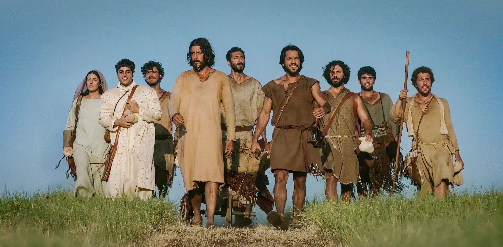
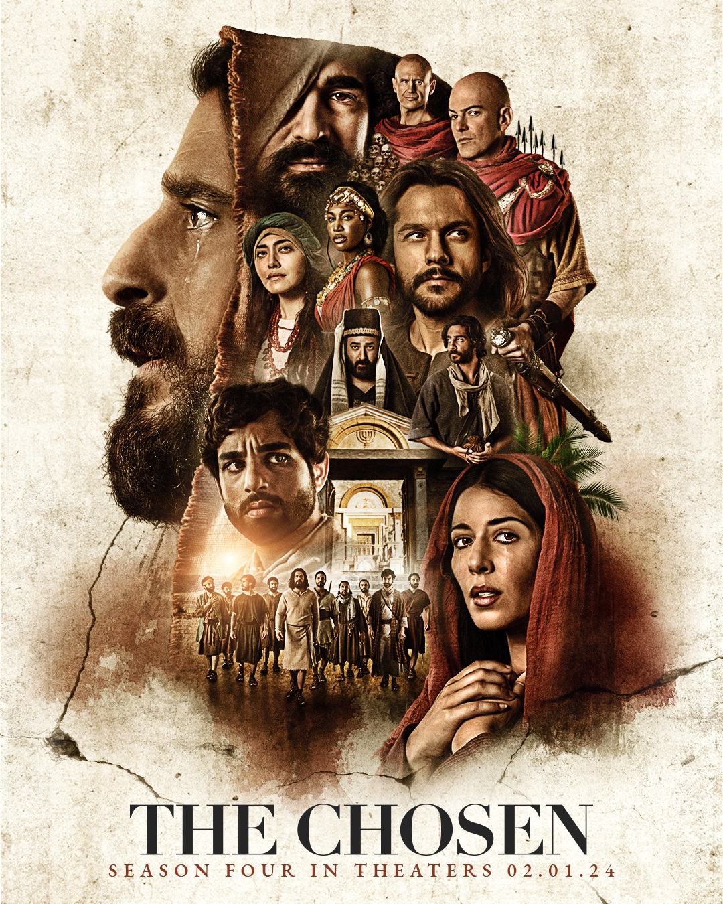
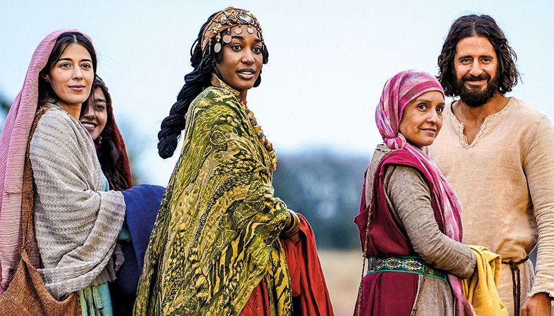

The Chosen es un aclamado serie cristiana creado, dirigido y coescrito por
Dallas Jenkins que relata la vida de Jesús de Nazaret a través de la perspectiva
de quienes lo conocieron.
La serie destaca por su enfoque profundamente humano y emocional, alejándose de los retratos
rígidos de producciones previas para explorar el contexto social y las historias personales de
los discípulos.
|
 |
Jesús: Un maestro compasivo y humano que transforma la vida de quienes lo rodean con sabiduría y humor. Simón Pedro: Un pescador impetuoso y carismático que lucha por dejar atrás sus deudas y su temperamento para liderar. María Magdalena: Una mujer redimida de un pasado oscuro que encuentra paz y propósito como seguidora devota. Mateo: Un recaudador de impuestos marginado y meticuloso que deja su riqueza tras encontrar aceptación en Jesús. Andrés: El hermano de Simón, un hombre reflexivo y leal que siempre busca guiar a otros hacia el Maestro. Juan y Santiago: Conocidos como los "Hijos del Trueno", son pescadores apasionados que aprenden el valor de la humildad. Nicodemo: Un erudito fariseo que, entre dudas y respeto, busca comprender la verdad detrás de los milagros. María: La madre de Jesús, quien ofrece apoyo incondicional y una mirada tierna sobre la misión de su hijo. Edén: La esposa de Simón, quien representa el sacrificio y la fe firme de quienes apoyan el movimiento desde el hogar. |
|
 |
La serie se encuenta disponible en diferentes plataformas streaming.
Tiene su propia plataforma gratuita Thechosen.tv |